A Story About Staying Calm
and Finding Your Way Home
Written & Illustrated for Andrew
| Word | Pronunciation | Type | 中文 | Definition |
|---|---|---|---|---|
| whisper | /ˈwɪs.pɚ/ | verb | 低语 | To speak very softly |
| disappear | /ˌdɪs.əˈpɪr/ | verb | 消失 | To stop being visible |
| shelter | /ˈʃɛl.tɚ/ | noun | 庇护所 | A place that protects you from weather |
| edible | /ˈɛd.ə.bəl/ | adj | 可食用的 | Safe to eat |
| survivor | /sɚˈvaɪ.vɚ/ | noun | 幸存者 | Someone who lives through danger |
| hover | /ˈhʌv.ɚ/ | verb | 悬停 | To stay in one place in the air |
| ferns | /fɝnz/ | noun | 蕨类植物 | Green plants with feathery leaves |
| bitter | /ˈbɪt.ɚ/ | adj | 苦的 | A sharp, unpleasant taste |
| stream | /striːm/ | noun | 小溪 | A small, narrow river |
| rescue | /ˈrɛs.kjuː/ | noun | 救援 | To save someone from danger |
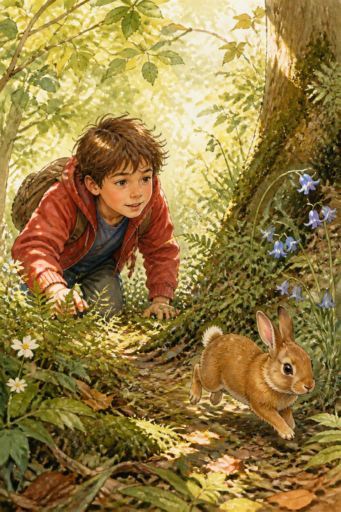
Leo had never been camping before. Pine Lake was huge, and everything smelled like pine needles and mud. Dad was wrestling with the tent poles. Mom was pulling stuff out of the cooler.
Then Leo saw it. A rabbit. Small and brown. Its nose twitched like crazy.
"Hey, little guy," Leo whispered, and crawled after it into the trees.
The rabbit hopped. Leo followed. The trees got thicker. The sunlight got dimmer.
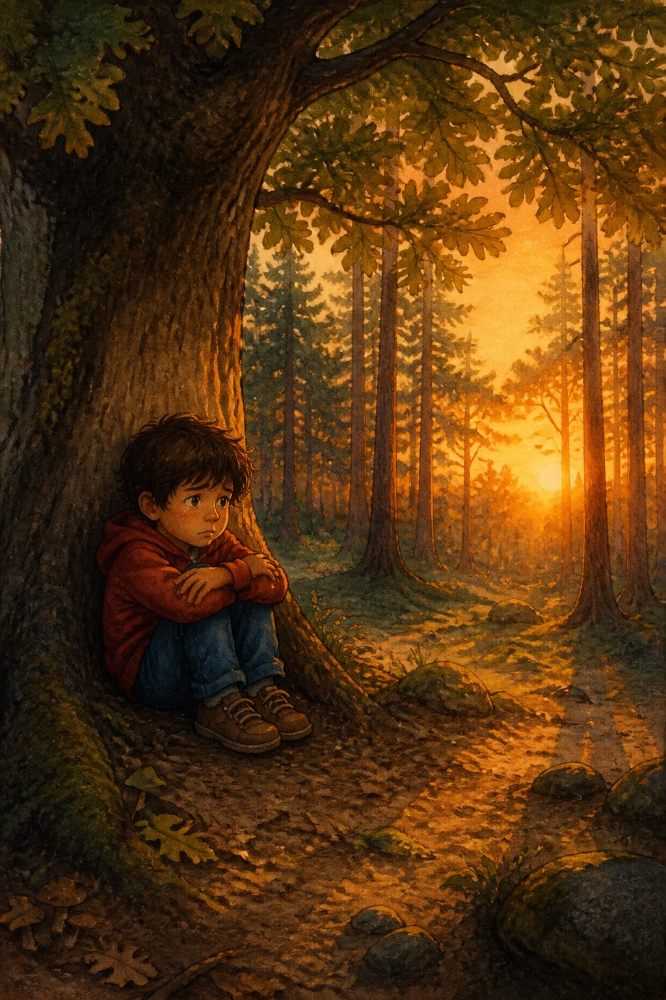
The rabbit was gone. Just gone. Leo looked around — every tree looked like every other tree.
"Hello? Hello!"
Nothing. Not even a bird.
His chest got tight. The sun was slipping away, and the shadows were getting longer and darker.
He sat down under a big tree and hugged his knees to his chest.
"I'm lost," he whispered.
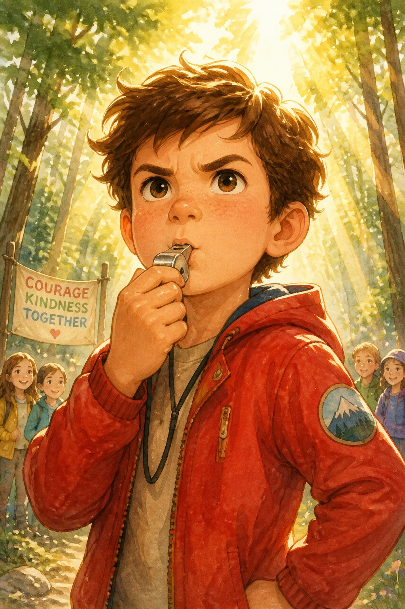
Then he heard his dad's voice in his head. "If you're lost, Leo, STOP. Sit down, Think, Observe, Plan."
He stopped walking. He sat down on a mossy rock. Deep breath in. Deep breath out.
There was a whistle clipped to his backpack strap. He blew three short blasts.
Pweee! Pweee! Pweee!
Nobody answered.
"Alright," he said. "Plan B."
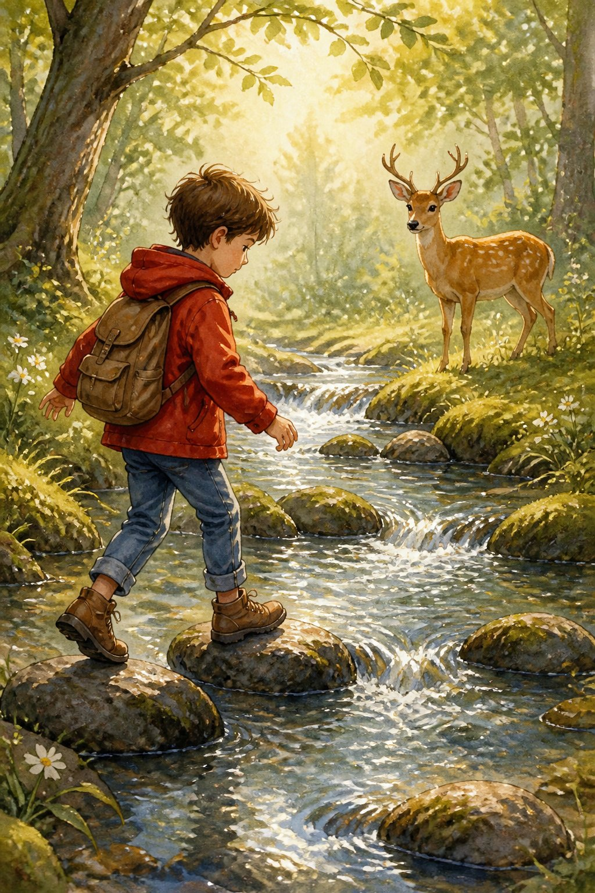
He found a stream. A little one, bubbling over rocks.
Dad always said, "Water runs downhill, and downhill leads to people."
So Leo followed it. Step by step, jumping from rock to rock so his shoes wouldn't get wet.
A deer stood on the other side, watching him.
"Hi, deer," Leo said.
The deer blinked at him, then turned and walked into the trees.
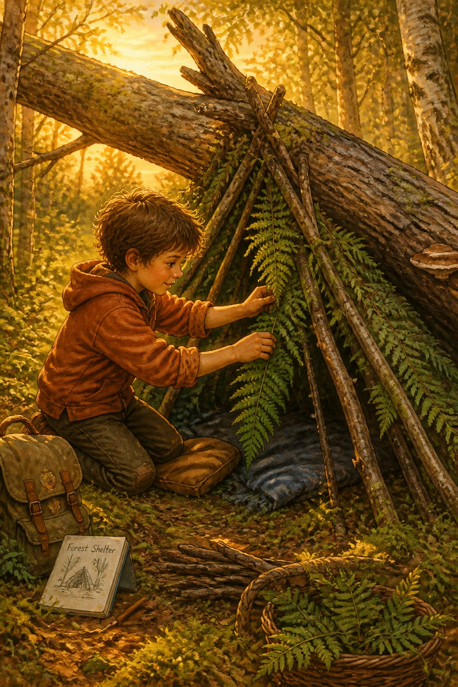
A clearing. Flat ground. Soft moss. A fallen tree.
"Perfect," Leo said.
He leaned branches against the fallen tree to make a roof. Then he piled ferns and leaves on top. Inside, he spread dry moss on the ground.
It wasn't fancy. It wasn't a hotel. But it was his, and it was safe.
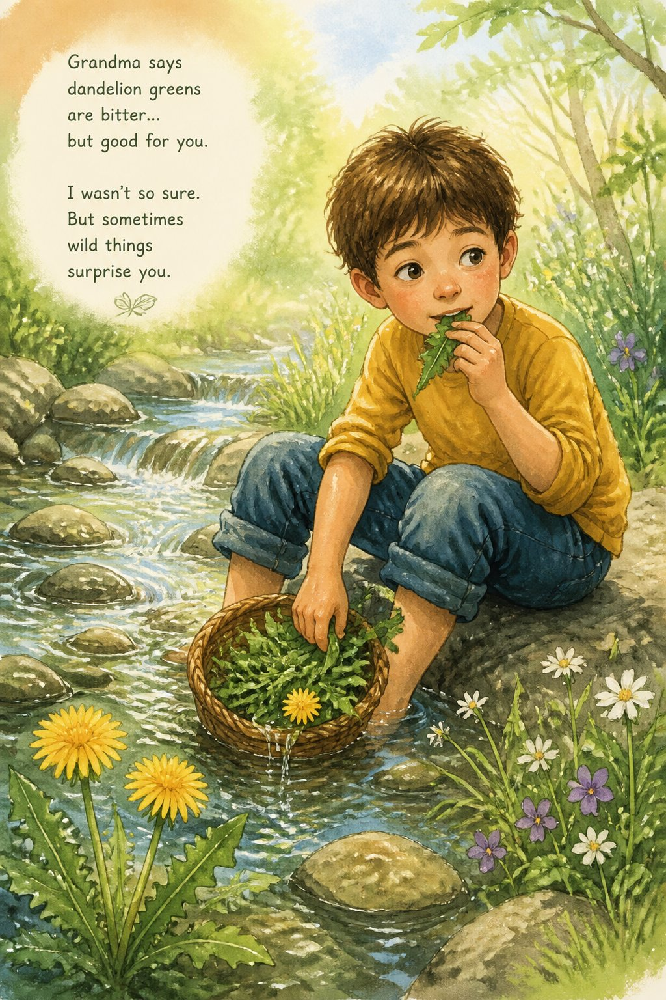
Leo's stomach was growling. Loud.
He remembered something from a nature show — dandelions are food. The whole plant.
He found some by the stream, washed them in the cold water, and took a bite.
Bitter. Really bitter.
But his stomach stopped growling.
"Wild salad," he said. He almost laughed.
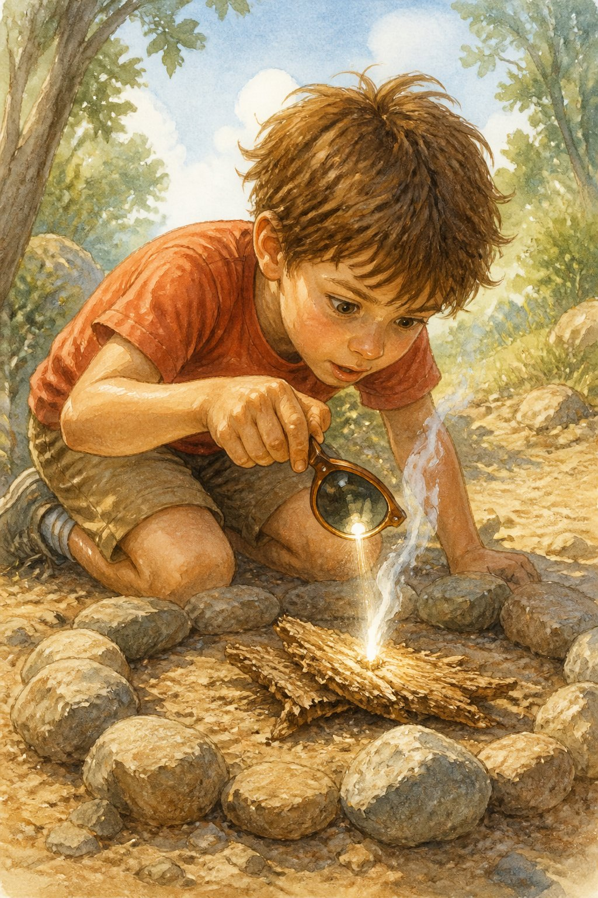
The night was getting cold. Really cold.
Leo cleared a patch of dirt. He circled it with stones like he'd seen in movies. He gathered dry twigs and a piece of bark.
Then he remembered his sunglasses. He popped the lens out and held it over the dry bark, angling it toward the last bit of sunlight.
Nothing.
He moved it. Held still. Breathed.
A tiny curl of smoke.
He blew on it gently.
A flame.
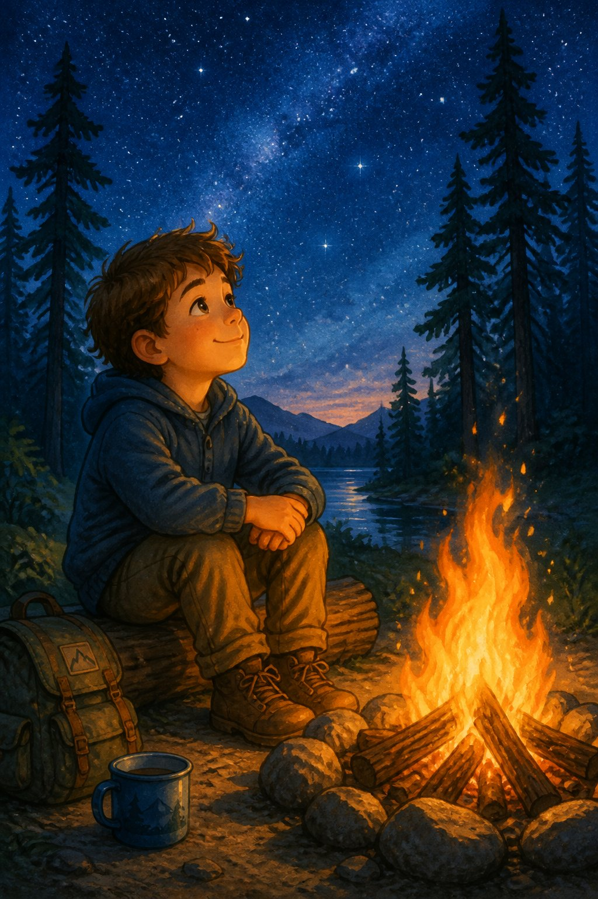
The fire crackled. Orange sparks flew up into the dark sky.
Leo added bigger sticks. The warmth was like a hug.
He sat there, looking up at the stars peeking through the treetops. He started humming his favorite campfire song.
He wasn't scared anymore.
He was a survivor.
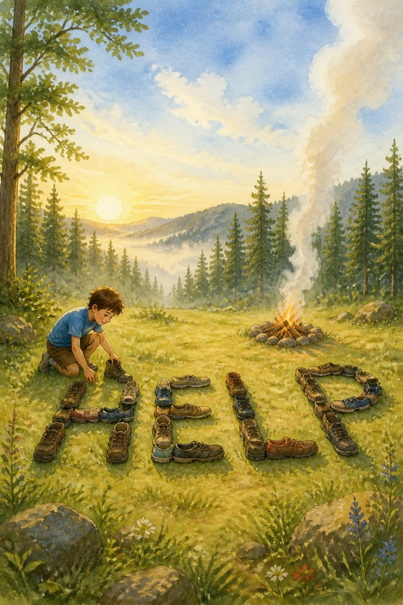
Morning came. Birds were singing.
Leo put more wood on the fire. The smoke was thick and gray, rising straight up into the sky.
Then he took off his shoes and used them to stomp giant letters in the clearing:
H E L P
Big enough to see from a helicopter.
He sat down next to the letters and waited.
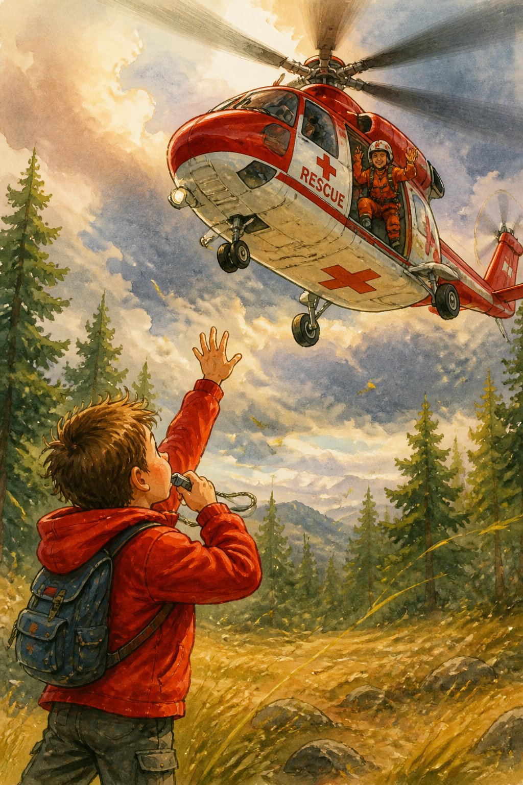
A low hum. Getting louder.
A helicopter burst over the treetops!
Leo jumped up. He waved his red jacket over his head and blew his whistle with everything he had.
The helicopter got closer and closer. Then it slowly came down in the clearing.
A rescue worker jumped out, smiling.
"Good job, kid. You did everything right."
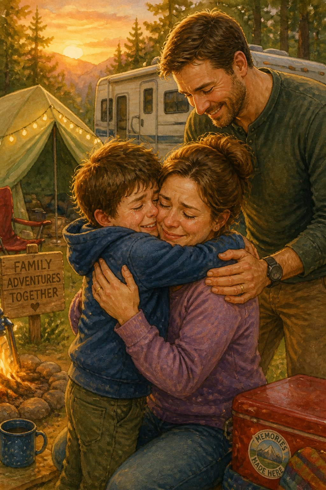
Mom saw him first. She burst into tears and ran to him, hugging him so tight he could barely breathe.
"Leo! Oh, Leo!"
Then Dad was there too, holding them both. He was quiet for a long time.
"I'm proud of you," Dad finally said. "You remembered everything."
Leo didn't say anything. He just held them. Inside, something warm was spreading through his chest.
He was a boy who survived.
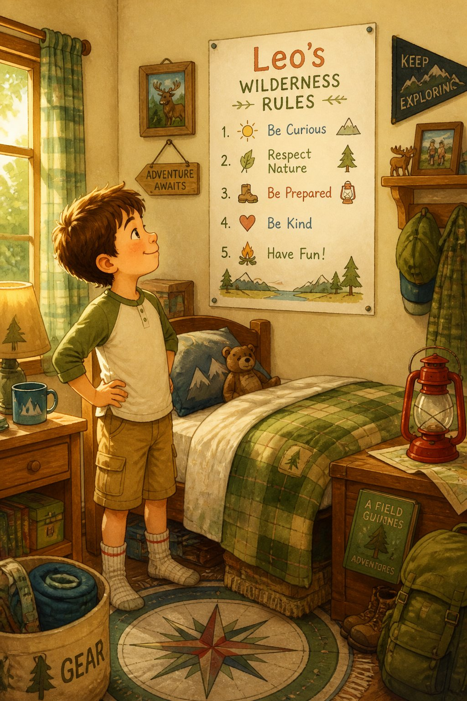
Back home, Leo sat at his desk with a marker and a piece of paper.
He wrote:
LEO'S WILDERNESS RULES
1. STOP. Sit down. Think.
2. Find water. Follow it.
3. Build shelter before dark.
4. Fire = signal for help.
5. You're stronger than you think.
He pinned the paper on his bedroom wall and stepped back to look at it.
Then he smiled.
He couldn't wait for the next camping trip.
Read each question and choose the best answer.
1. Why did Leo get lost in the forest?
A. He wanted to explore the forest alone
B. He followed a rabbit into the woods
C. He ran away from his parents
D. He got on the wrong trail
2. What did Leo do FIRST when he realized he was lost?
A. He built a shelter
B. He made a fire
C. He blew his whistle and called for help
D. He followed a stream
3. Why did Leo follow the stream?
A. He was thirsty
B. He wanted to catch fish for dinner
C. His dad told him water flows downhill to people
D. The deer was drinking from it
4. What does "shelter" mean in the story?
A. A warm blanket
B. A place that protects you from weather
C. A type of food
D. A rescue helicopter
5. The story says the dandelions were "edible." What does edible mean?
A. Poisonous and dangerous
B. Safe to eat
C. Bitter and bad-tasting
D. Very expensive
6. How did Leo start the fire?
A. He used matches from his pocket
B. He rubbed two sticks together
C. He used the lens from his sunglasses to focus sunlight
D. He found a lighter in the woods
7. The story says Leo used "ferns" for his shelter. What are ferns?
A. Small rocks
B. A type of green plant with feathery leaves
C. Pieces of clothing
D. Tree branches
8. What did Leo do to help rescuers find him in the morning?
A. He climbed a tall tree
B. He made a HELP sign with his shoes and kept the fire smoking
C. He walked back the way he came
D. He called 911 on a phone
9. The helicopter "hovered" before landing. What does hovered mean?
A. It landed very fast
B. It stayed in one place in the air
C. It made a loud noise
D. It flew away
10. What is the MAIN lesson Leo learned from his experience?
A. Never go camping again
B. Always stay with your family, and if you get lost, stay calm and use survival skills
C. Rabbits are dangerous animals
D. The forest is a scary place
1. B — He followed a rabbit into the woods
Leo saw a rabbit and crawled after it into the trees (page 1). He was just curious, not trying to run away.
2. C — He blew his whistle and called for help
Leo first blew three short blasts on his whistle and called out (page 3). Only when nobody answered did he move to Plan B.
3. C — His dad told him water flows downhill to people
Leo remembered his dad's advice: water flows downhill, and downhill leads to people (page 4).
4. B — A place that protects you from weather
Leo built a shelter using branches, ferns, and leaves to protect himself from the cold night air (page 5).
5. B — Safe to eat
Edible means safe to eat. Leo knew dandelions are edible - the whole plant can be eaten (page 6).
6. C — He used the lens from his sunglasses to focus sunlight
Leo took the lens out of his sunglasses and focused sunlight onto dry bark until it started smoking (page 7).
7. B — A type of green plant with feathery leaves
Ferns are green plants with feathery, divided leaves that grow in forests (page 5).
8. B — He made a HELP sign with his shoes and kept the fire smoking
Leo kept the fire smoking and used his shoes to make the word HELP in the clearing, visible from the sky (page 9).
9. B — It stayed in one place in the air
To hover means to stay suspended in one place in the air. The helicopter hovered before coming down (page 10).
10. B — Stay with family, stay calm, use survival skills
Leo's rules at the end show the main lesson: stay calm, use survival skills, and be brave (page 12). He was excited for the next trip, not scared.